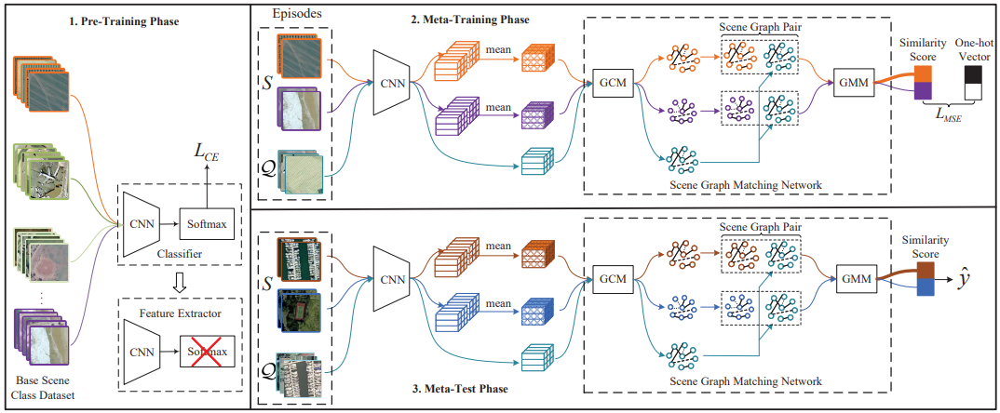
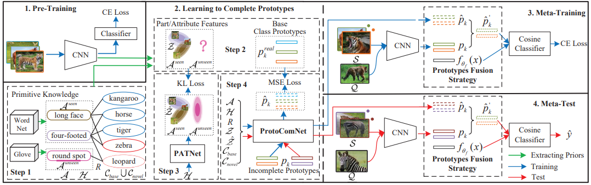
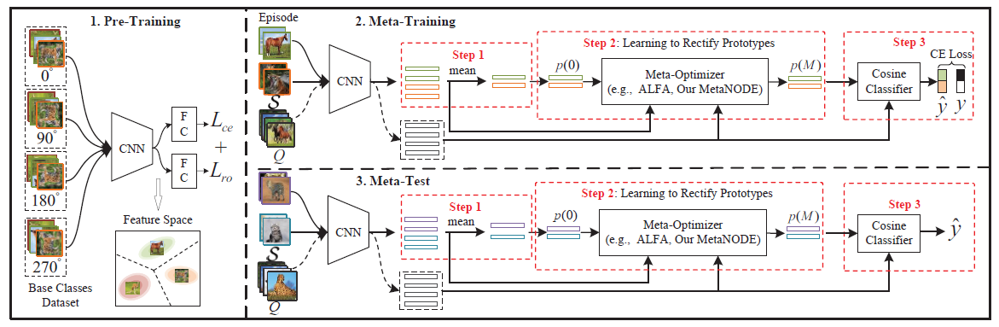
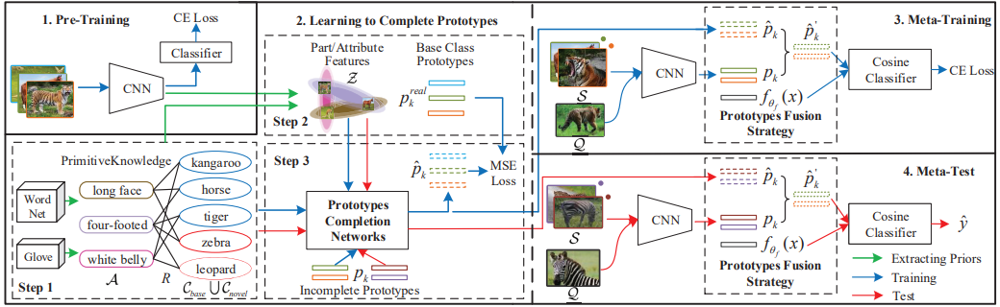
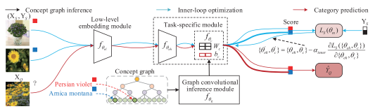

Baoquan Zhang 张保权PhD student
Harbin Institute of Technology, Shenzhen (HITSZ),
|
|

Biography
News
Publications
|  | SGMNet: Scene Graph Matching Network for Few-Shot Remote Sensing Scene Classification. Baoquan Zhang, Shanshan Feng, Xutao Li, Yunming Ye*, Rui Ye. |
|  | Prototype Completion for Few-Shot Learning. Baoquan Zhang, Xutao Li*, Yunming Ye*, Shanshan Feng. |
|  | MetaNODE: Prototype Optimization as a Neural ODE for Few-Shot Learning.[PDF][arXiv][Code] Baoquan Zhang, Xutao Li*, Shanshan Feng, Yunming Ye*, Rui Ye. Thirty-Sixth AAAI Conference on Artificial Intelligence ( AAAI ), 2022. (CCF-A) |
|  | Prototype Completion with Primitive Knowledge for Few-Shot Learning.[PDF][arXiv][Code] Baoquan Zhang, Xutao Li*, Yunming Ye*, Zhichao Huang, Lisai Zhang. IEEE Conference on Computer Vision and Pattern Recognition ( CVPR ), 2021. (CCF-A) |
|  | Learn to Abstract via Concept Graph for Weakly-Supervised Few-Shot Learning. Baoquan Zhang, Ka-Cheong Leung, Xutao Li, Yunming Ye*. Pattern Recognition ( PR ), 2021, accepted. [arXiv] [PDF](SCI, IF=7.74, CCF-B) |
© Baoquan Zhang | Last updated: December 12 2021